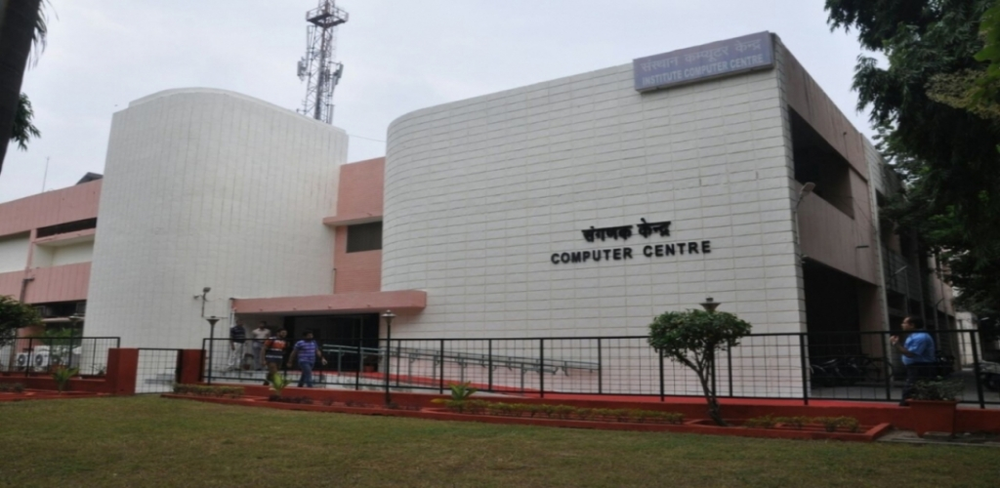
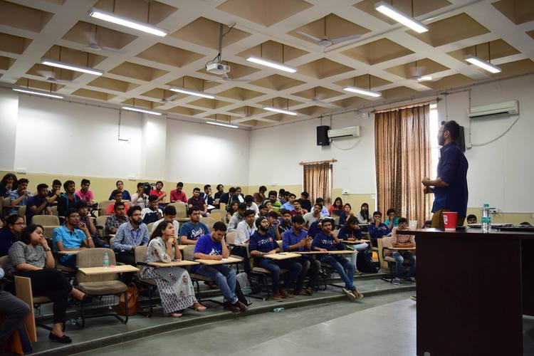

As in any world class academic institution, library services in IIT Roorkee are the core of academic services, and therefore, Central Library of the Institute finds a unique place in Academic Service centres. Besides Central Library every academic department/centre has its own departmental library which contains the core collection required by the concerned department/centre.
The Central Library of the Institute is one of the best academic libraries in the country. With its collection of more than 3,20,000 documents it provides the world class information support to its users. Besides printed books and journals, its collection contains all forms of documents such as CD-ROMs, On line databases, audio-video material, standards, specifications, theses, reports etc.
Important contacts:
Librarian
Tel.: 01332-285939, 285239
e-mail: library@iitr.ac.in,
jay.mcl2016@iitr.ac.in
Deputy Librarian
I/C Periodical Section, Plagiarism, Administration,
Maintenance & Rajbhasha
Tel.: 01332-285358, Mob.: 8126128314
e-mail:sompal.mgcl@iitr.ac.in
Institute Computer Centre

This is the place where we can have all the networking and technical things headquartered.ICC also provides students some licensed software at free of cost.It is especially useful to freshers who don't have a laptop to work with.Any compliant realated to network issues in the campus can be filed or solved here.
Important contacts:
Head ICC
Tel:+91-1332-285701 (O)
+91-1332-285443 (R)
e-mail: head.icc@iitr.ac.in
Lecture Hall Complex

The place where you would gain a lot of knowledge through intearactive class sessions with professors.There is a very speed wifi availble at LHC's.There are two LHC's: